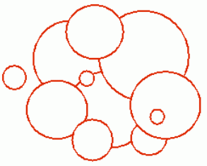

有 $n$ 个圆盘从天而降，后面落下的可以盖住前面的。求最后形成的封闭区域的周长。看下面这副图, 所有的红色线条的总长度即为所求。

第一行为 $1$ 个整数 $n,N \le 1000$。
接下来 $n$ 行每行 $3$ 个实数，$r_i,x_i,y_i$，表示下落时第 $i$ 个圆盘的半径和圆心坐标。
最后的周长，保留三位小数。
2 1 0 0 1 1 0
10.472
 Comet OJ
Comet OJ